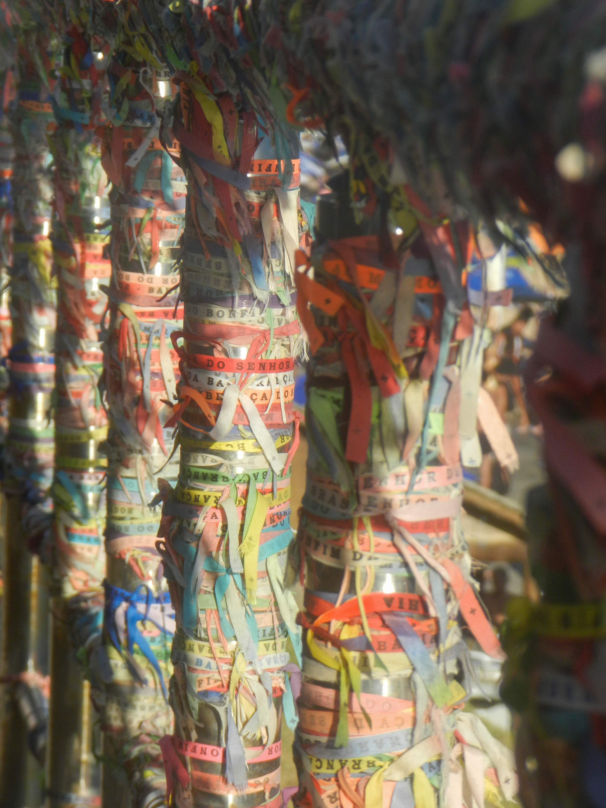
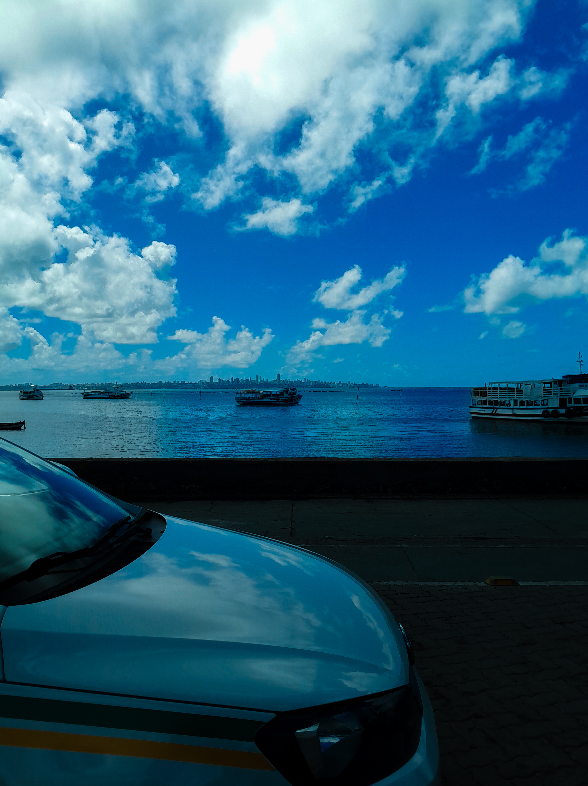
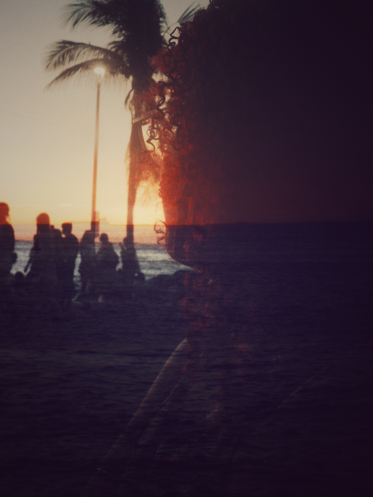
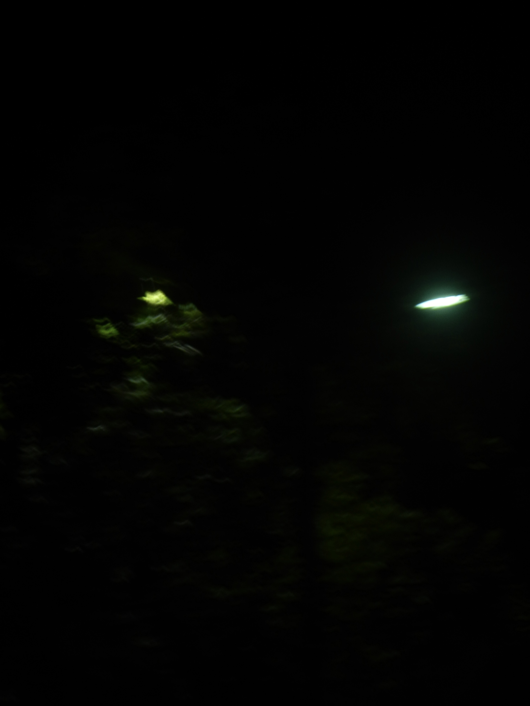

Portfolio Fotografico
Trabalhos Selecionados
Selecao representativa do portfolio fotografico de Matteo. Cada imagem reflete uma categoria diferente de seu repertorio visual — da paisagem costeira ao detalhe cultural, do noturno experimental ao natural dramatico.







